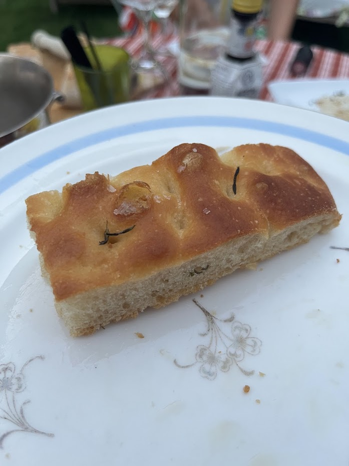
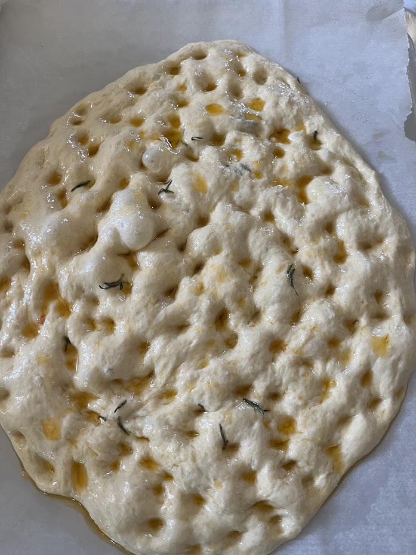

Focaccia de Peppe
⏱️ 3h30
🔥 Facile
👥 1 focaccia (22 cm)



Étapes
- Mélangez l’eau, la levure et le sucre. Ajoutez la farine et la semoule, puis le sel et l’huile. Pétrissez jusqu’à obtenir une pâte lisse.
- Laissez lever environ 3 heures.
- Étalez la pâte dans un moule huilé de 22 cm et laissez reposer 30 minutes.
- Ajoutez les tomates cerises coupées en deux et les olives. Faites des petits creux avec les doigts, arrosez d’huile, puis ajoutez l’origan et un peu de sel.
- Cuisez à 220°C pendant 22 à 28 minutes, jusqu’à ce que la focaccia soit bien dorée.